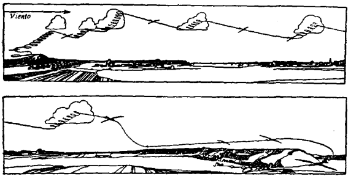
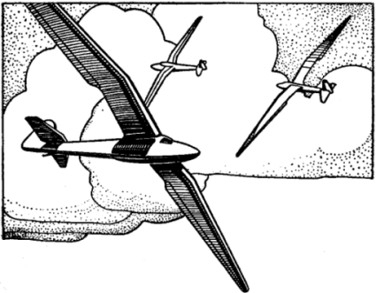
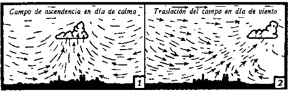
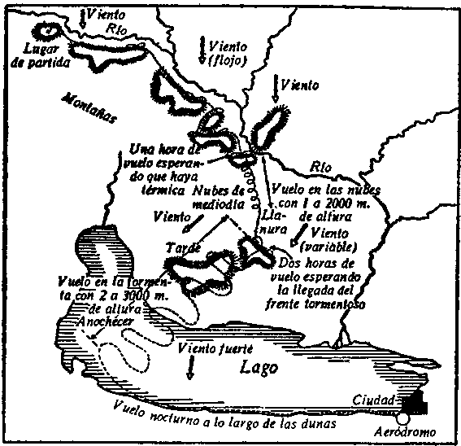

Manual del Vuelo a Vela
Wolf Hirth
1942
Vuelo de distancia
por
WOLF HIRTH
El
vuelo a vela de distancia es tan antiguo como el vuelo sin motor; los primeros planeos de
Lilienthal eran pequeños vuelos de distancia. Más tarde, fueron los hermanos Wright y
luego, en 1921, Friedrich Harth, los primeros que consiguieron aterrizar en el punto de
salida, después de haber hecho vuelos largos. Lo mismo que ocurre en otros aspectos del
vuelo sin motor, que donde mejor se ve su evolución es en los concursos del Rhön, así
pasa también en los vuelos de distancia. He aquí la evolución: En 1920 a 1922 estos
vuelos de distancia fueron siempre ejecutados en línea recta y contra el viento ; el
aterrizaje se hacía en el valle, o sea unos cientos de metros por debajo del punto de
salida. En 1923 se hicieron las primeros tentativas de cubrir grandes distancias con otra
clase de vuelo, es decir, volando con viento de popa y con viento lateral, saltando de
colina a colina. El vuelo con viento de popa no tuvo por entonces éxito, mientras que
Botsch (un muchacho de Darmstadt) consiguió recorrer 18 Km. en vuelo de colina a colina y
con ello elevó considerablemente las marcas obtenidas hasta entonces. El primer vuelo de
éxito con viento de popa fue el de Max Kegel, realizado en una tormenta en el año 1926,
aterrizando a 52 Km. de distancia de la Wasserkuppe (Conviene
hacer una aclaración. El viento de popa quiere decir aquí que el avance general
del velero es en la dirección del viento, pero en el detalle de su ejecución no vuela el
velero en sentido del viento.
En
efecto, una tormenta es, como se ha dicho antes, un rulo que avanza con la ascendencia por
delante: la táctica de vuelo es « ir
y venir » a
lo largo del rulo, es decir como si la tormenta fuera una ladera que avanza en dirección normal
a la suya. La trayectoria real del velero es el resultado de componer, la de ida y
vuelta delante de la tormenta con el avance de ésta, es decir, una trayectoria ondulada
pero extendida en sentido del viento. - N. del T.);
sin
embargo, éste era un vuelo con apoyo en una tormenta, mientras que Nehring, el afamado
maestro de vuelos de distancia con apoyo orográfico, cubrió igual distancia en 1927, y
en el 1928 llegó a más de 70 Km. con igual procedimiento. Por lo tanto, en lo dicho
hasta ahora pueden distinguirse las siguientes posibilidades de vuelo a vela de distancia.
1.º
Vuelo recto con viento de proa, desde una montaña hasta el valle.
2.º
Vuelo
a lo largo de una ladera con viento lateral o, en los casos de grandes distancias, vuelo
con viento lateral apoyándose en colinas sucesivas.
3.º
Partida
desde una ladera; ganar altura en la ascendencia orográfica y luego vuelo de distancia
con viento de popa.
4.º
Partida
desde una ladera, vuelo en la ascendencia orográfica, luego vuelo con apoyo en una
tormenta, avanzando en sentido del viento.
Desde
luego, con simple vuelo a lo largo de una ladera, se cubrieron grandes distancias, casi
siempre en las dunas de algunas costas o en cordilleras, como lo hizo Ferdinand Schulz en
1927, que alcanzó más de 60 Km. Pero todos estos métodos de vuelo de distancia se
abandonaron completamente cuando se aprendió bien el apoyo en las ascendencias
térmicas, pues con ellas podía uno despegarse de las montañas y de los malos terrenos
de aterrizaje y otros parecidos inconvenientes.
Se
podía uno mover en alturas mucho mayores que las alcanzadas hasta entonces y dominar
mejor con la vista la trayectoria que se había de seguir en el vuelo. Actualmente un
vuelo de distancia modelo se realiza con apoyo combinado, o sea aprovechando los distintos
métodos para vuelo de distancia. Después de envolar en una ladera, se gana altura con la
virada en círculo en la térmica, en cuanto se ha encontrado una corriente ascendente
intensa, y, desde ella, se deja uno llevar por el viento, con lo que ya se hace alguna
distancia. Si de ese modo se ha llegado a la altura de los 800 ó
1000. m. y la subida ha cesado por existir una inversión o nubes de escaso espesor, se
dirige la proa de nuestro pájaro en la dirección en que sople el viento y se toma el
rumbo de esta dirección como base directriz del vuelo. Naturalmente que puede haber
razones, como, por ejemplo, objetivo fijado o la necesidad de evitar ciertas comarcas que
se encuentren en esa dirección, que obliguen a no seguir exactamente el rumbo del
viento de popa (Se recuerda
a este respecto que el rumbo
para llevar el viento en popa
es
el opuesto
al que designa la dirección del viento, pues se sabe que, por convenio universal, el
viento se designa con el rumbo de donde viene. - N. del T.), sino que
haya que desviarse más o menos de él (Fig. 144).
Nuestras
grandes distancias las hemos hecho llevando como directriz la idea de avanzar lo más de
prisa posible para haber cubierto una gran distancia cuando al llegar el atardecer nos
abandone la térmica, cuidando siempre de encontrar una nueva ascendencia después de
haber abandonado la anterior.

Ya en 1931 me
había yo dado cuenta de que puede ser muy útil no hacer uno solo esos vuelos de
distancia, sino en combinación con otro compañero, lo que habíamos hecho efectivamente
Groenhoff y yo. Después se vio que no era favorable ir más de dos al vuelo de distancia,
porque se estorban unos a otros. Dos veleros pueden muy bien volar en círculo en la
misma pompa térmica, pero, para tres, el espacio resulta muchas veces demasiado pequeño
(Fig. 145).

Fig. 145. Volar tres en la misma pompa no es recomendable. Pero volar una pareja es casi siempre de buen resultado. Por consiguiente, será bueno volar dos pilotos en vuelo combinado todo el tiempo que el viaje permita hacerlo mientras no sea interrumpida esa táctica por el vuelo dentro de una nube
La mayor
parte de los pilotos que practican el vuelo de distancia hacen lo mismo que los pájaros,
que se dejan llevar por la ascendencia hasta la base de la nube y desde allí toman el
rumbo que han de seguir en su vuelo.
Una
técnica que acaso haya sido poco ensayada, pero que desde luego se ve que con bastante
ejercicio había de tener éxito, es mantenerse por mucho tiempo en las nubes, porque
allí se sube muy aprisa, y después convertir la altura ganada en rápido avance. Con
esta táctica, el vuelo en combinación con más de un velero se haría difícil, si no
imposible.
Ya ha
ocurrido a algún piloto poder seguir volando con un frente después de haberse estado
horas volando con apoyo térmico. Una casualidad especialmente favorable es la de
encontrarse con un frente tormentoso a la hora del día en la que ya empieza a querer
cesar la térmica, como es, en el centro del verano, hacia las seis de la tarde. Con
circunstancias particularmente buenas se puede llegar a volar con una tormenta así
hasta de noche, pero claro que se debe contar con una chiripa para el aterrizaje o con
conocer muy bien la comarca sobre la que se vuele.
Sin duda
es un grave error para un joven piloto entregarse enteramente al vuelo térmico y no
querer saber ya nada del vuelo con apoyo orográfico. Si bien nuestros grandes vuelos
del concurso del Rhön de 1931 se ejecutaron, casi exclusivamente, con apoyo térmico y en
frente tormentoso, nos vimos obligados, en 1932, a volver otra vez al apoyo orográfico.
En aquella ocasión pude hacer los dos vuelos de mayor distancia del concurso (nada menos
que trayectos de 145 y 155 Km.) únicamente con ayuda de apoyo orográfico y
precisamente lo hice volando en térmico en corto tiempo después de dejar la Wasserkuppe,
sobre el Geba, luego en el Gran Beerberg del bosque de Turingia, más tarde en el
Kickelhahn y, una detrás de otra, sobre seis u ocho diferentes colinas, hasta que
finalmente, en Jena, estuve dos horas en ida y venida sobre una ladera, lo que, por fin,
me dio lugar a engancharme en una nube y así hice 25 Km. más.
Hay
varias cosas que pueden servirnos de ayuda en la ejecución de un vuelo de distancia,
además de las conocidas indicaciones, tales como busardos, formas típicas de nubes u
otros compañeros de los pilotos de velero ; así yo he volado muchas veces y con
velocidad, al lado de mariposas, trozos de papel elevados hasta lo alto por los
torbellinos y he visto polvo seco que me hizo notar que, cerca, debía haber una
ascendencia. Entonces debe uno detenerse, y tirando de la palanca, transformar en altura
el exceso de velocidad y tranquilamente buscar dónde se halla la ascendencia más
intensa. Cuando en un vuelo de distancia se lleva bastante altura, no se debe hacer caso
de las ascendencias débiles y solamente se atenderá a las pompas térmicas rápidamente
ascendentes para, de este modo, avanzar lo más aprisa posible. Desde luego se debe
decir que esas rápidas ascendencias sólo se encuentran en las alturas ya grandes, y la
velocidad ascendente depende de la estratificación de temperatura que haya en el aire.
Puede
presentarse la favorable circunstancia, que yo mismo he encontrado en la práctica, de que
las ascendencias más intensas se hallen en las alturas entre los 600 y los 900 m. Si se
ha encontrado un caso de esos se tratará de hacer todo el vuelo en esa capa. Lo último
sería llevarse el chasco de que la velocidad del viento en esta altura resultase más
pequeña que en otras alturas mayores o menores. El mejor punto de referencia para
resolver esa cuestión es la observación de la sombra de las nubes, lo cual
naturalmente sólo puede tener valor si se vuela, poco más o menos, a la altura de ellas.
Así,
alguna vez puede uno verse obligado a volar más bajo y acaso no se pueda alcanzar más de
los 600 m. sobre el terreno. Sin embargo, también en este caso se puede obtener durante
horas el apoyo térmico y si el cielo está muy nublado guiarse por los rayos del sol que
lleguen a pasar por algún claro de las nubes. Esto me recuerda en seguida el vuelo
térmico de cuatro horas y media en el que hice, por primera vez, la vuelta al
Oechsenberg, saliendo de la Wasserkuppe y regresando a ella. Las circunstancias
térmicas en aquel
día eran tan mezquinas que yo estaba ya decidido a considerar como imposible de alcanzar
el objetivo fijado para el vuelo; solamente pude ayudarme oteando con ahínco en busca de
una aldea o un campo de cereal bañados por el sol. Hacia allá volé, naturalmente,
teniendo en cuenta el efecto de traslación que el viento produce (Fig. 146) y la
situación de las ascendencias, y así fue como pude seguir trabajando, consiguiendo
lentamente ganar un cuarto de metro de altura, o, a veces, solamente conservándola.
Como
nunca se puede tener un criterio absolutamente seguro sobre las ascendencias, nunca se
puede saber si sobre tal punto
bañado por el sol habrá realmente aire ascendente; lo que parece bastante seguro es que
raras veces hay canales o chimeneas de aire ascendente en los que la ascendencia
persista durante horas. La ascendencia térmica hay que imaginársela, casi siempre,
pensando que a intervalos de diez a veinte minutos se desprenden del suelo pompas
térmicas que se elevan ; a cada desprendimiento sigue una acumulación de aire caliente
en la capa inferior que, al cabo de algún tiempo, se desprende nuevamente.

Fig. 146. Ascendencia sobre una ciudad (según Bachem), en el caso de calma (1) y con
viento (2)
Estando en
Buenos Aires, en abril de 1934, tuve ocasión de comprobar durante un vuelo de cuatro
horas de duración, con cielo azul, sin una nube, que del mismo sitio se desprendía una
pompa térmica cada diez o quince minutos y hasta volé todo el tiempo en el mismo lugar
de la atmósfera, recibiendo regularmente, cada cuarto de hora, el impulso que me daba
tal ascendencia periódica.
La figura
147 representa cómo puede llevarse a cabo un gran vuelo de distancia. El vuelo
hipotético se compone de la combinación de todos los modos posibles de hacer vuelos de
distancia y cuenta con algunas casualidades, con llevar equipo de radio y eventualmente
con vuelo en biplaza.
Cuando se
puede contar con cordilleras extensas, como sucede en muchos países de nuestra Tierra, se
puede envolar por la mañana temprano en una ascendencia orográfica, seguir volando a lo
largo de la cordillera y llegar a su fin al tiempo en que empiece la producción de la
térmica. En Norteamérica se hizo un vuelo orográfico de este género cubriéndose 200
Km. de distancia, hecho realizado por Lew Barringer. Se abandona la orografía cuando ya
se han dejado atrás 200 Km., y entonces, con apoyo térmico, se va volando sobre nuevas
comarcas, hasta que, a la tarde, se pueda encontrar nuevo apoyo orográfico o hasta quizá
otra cordillera, a lo largo de la cual puede volarse otra vez aprovechando su
ascendencia. Al cesar el viento, será posible, sin duda, pasar la noche en el aire
sobre una región preparada con iluminación adecuada, lo que puede hacer el equipo de
hombres de acompañamiento que vayan en auto detrás de nosotros y, a la mañana
siguiente, seguir el vuelo con apoyo térmico u orográfico. Se ve, por lo dicho, que
hay todavía muchas posibilidades de que, mediante una preparación bien estudiada, se
puedan hacer vuelos de distancia que mejoren mucho las marcas existentes.

Fig. 147. Este vuelo « imaginado representa
un ejemplo de vuelo de distancia llevado a cabo utilizando diferentes clases de
ascendencias. A hora temprana de la mañana empezamos a volar a vela con apoyo
orográfico a lo largo de los montes y cuando sea necesario se da el salto de meseta a
monte ganando altura previamente. En la última ladera se espera a que empiece la térmica
y se sigue el vuelo por la llanura apoyándose en las nubes.
Si tenemos radio a bordo, lo que es de esperar que pronto sea realidad, podremos recibir
el aviso de una estación meteorológica, que nos da a conocer la llegada de un frente
tormentoso. Si las noticias que van llegando siguen siendo favorables, esperaremos el
frente y seguiremos con él nuestro viaje pasando sobre pantanos y lagos, en donde no hay
que esperar térmica, para luego en la prima noche volar a vela sobre las dunas, siguiendo
el viaje guiados por la espuma de las rompientes. Todavía no ha habido quien haga un
vuelo de distancia de dos días de duración, aun cuando hoy no es una cosa difícil, dada
la gran cantidad de terrenos apropiados para el vuelo a vela que se tienen conocidos.
Podría ayudar muy bien a este fin una carta de vuelo a vela, en donde constasen las
laderas de buenas condiciones para el vuelo, así como los terrenos en los que hay «
absorción »
Después de un
vuelo de distancia, es natural esperar un aterrizaje de circunstancias, con lo que o se
puede vivir una de las más encantadoras aventuras de la existencia o, también, se
puede experimentar algo muy desagradable. En todo caso la cosa es muy distinta de cuando
se le espera a uno y esto es quizá uno de los mayores encantos de un vuelo de distancia
en velero. Cada vuelo de este género es un viaje de exploración a un país desconocido.
A pesar de esto, se pueden dar algunas reglas, que serán de utilidad, al menos para los
principiantes.
Siempre
que sea posible se deberá aterrizar cerca de algún pueblecito, pero no demasiado cerca;
lo mejor, de uno a uno y medio kilómetros de distancia, en la proximidad de una carretera
o de un buen camino para que sea fácil el transporte del aparato desmontado. Para mí
lo más agradable era aterrizar cerca de algún cortijo, de algún molino de viento o
alguna casa próxima a la carretera, junto a los cuales se puede aterrizar sin temor a que
acuda mucha gente, se tiene en seguida teléfono y también sitio para ponerse al abrigo
del tiempo. Sin embargo, cuando tuve que aterrizar cerca de una aldea o pequeña ciudad y
vino mucha gente a ver el aparato, procuré buscar en seguida alguna persona con cargo
oficial para encargarle la vigilancia del aparato. Una gratificación de un par de marcos
puede, en estos casos, evitar daños que valgan cientos de marcos (Se traduce,
naturalmente, con fidelidad, así que cada uno medirá las circunstancias
de su
país para dar valor efectivo
a lo que manifiesta el autor alemán.-N. del T.). Cuando había
encontrado uno o dos vigilantes les explicaba bien claro la ligereza de construcción del
aparato, cosa que la gente no puede comprender y les hacia ver que se podía romper con
sólo tocarlo sin cuidado. Entonces pedía que me prestasen una bicicleta o rogaba a
algún motorista que me llevase hasta el puesto de teléfono más próximo. Si el vuelo me
había llevado muy lejos, de modo que no podía espetar que el equipo de transporte
llegase antes del día siguiente, lo primero que hacía, antes de ir al teléfono, era
desmontar el aparato y dejarle en algún granero o cobertizo. En ningún caso recomiendo
mandar a otra persona a que dé el aviso por teléfono, pues esto siempre da lugar a
falsas interpretaciones. Por lo demás, remito al lector al capítulo redactado, sobre
estos asuntos, por Paul Krekel, quien es muy ducho en la materia (Pág. 453).
El
problema es más sencillo cuando se aterriza en un aeródromo; entonces sólo hay que
tener cuidado de no ocupar el sitio necesario para los aviones de tráfico o de escuela.
Nosotros, los pilotos de velero, sabemos ya dónde tenemos que ponernos: en los márgenes
del campo, donde no estorbamos.
En el
capítulo siguiente completa estas explicaciones E. G. Haase, exponiéndonos sus propias
impresiones y experiencia de vuelo de distancia.
Impresiones de un piloto sobre el vuelo de distancia
La
conclusión que saco de los
kilómetros que llevo hechos con
vuelo a vela en los últimos años, que suman más de 6000, es la de que
nunca se acaba de aprender, cosa que nadie creerá y que todo depende hoy de afinar y
mejorar los aparatos, los cuales aun no han llegado, en su evolución, a la perfección
completa. Creo que todos podemos elevar nuestras marcas de distancia adquiriendo mayor
pericia en el vuelo.
Empiezo
por suponer que se trata de un piloto que sabe volar correctamente, del cual se puede
decir que se « ha criado con su aparato» y que sabe virar impecablemente. En segundo
lugar, que dispone de buenos instrumentos, sobre todo de un variómetro moderno de
perfecta sensibilidad y rapidez de indicaciones. Además, ha de contar con un asiento
cómodo (almohadilla neumática) y llevar algo de provisión - algunas galletas y
chocolate y un termos con una limonada fresca - así como la cabeza protegida contra el
sol.
Supuesto
ya que se tiene todo eso, se puede hacer la pregunta: « ¿ Qué técnica de vuelo
emplearé para llegar lo más lejos posible o para alcanzar el objetivo fijado ? » La
respuesta dice sencillamente: « En primer lugar, volaré lo más aprisa posible y
después me esforzaré en que no me chupe el suelo prematuramente. » ¿ Cómo se vuela lo
más rápidamente posible ? Lo principal es ganar desde luego y de prisa mucha altura,
pues no basta subir, sino encontrar la más rápida ascendencia. Esto quizá no sea fácil
al principio, pues hay que saber en dónde está y luego encontrarla y no seguir el vuelo
dejándola atrás. A pesar de estos riesgos, yo no me he considerado satisfecho cuando, a
mediodía, que es la hora en la que hay que contar con la buena térmica, no había
hallado más de 1,5 m/s. de velocidad ascendente,
Respecto
a la cuestión del vuelo sin visibilidad, se debe decir que el vuelo dentro de las nubes
es indispensable para llegar a una marca de distancia, ya que en ellas es en donde existen
siempre las ascendencias intensas y claro es que para entrar en una nube es preciso contar
con que el aparato que se lleva es a propósito para ese género de vuelo; con el «
Bussard », por ejemplo, no es recomendable entrar en una nube si no va provisto de frenos
para el vuelo desbocado. Por el contrario, con el « Minimoa », he estado muchas veces
toda una hora volando dentro de la nube y he ido a la siguiente entrando directamente en
ella, a mayor altura que su base, buscando ya la mejor ascendencia, para volver a
reanudar el vuelo en ruta cuando se debilitaba la ascendencia o la temperatura se
acercaba a la de congelación. Al volar en nube se comete muchas veces el error de virar
demasiado pronto, por creer que ya se está suficientemente dentro de ella cuando todavía
se está realmente en el margen. El vuelo combinado con otro piloto sólo lo creo
ventajoso cuando ambos pilotos y aparatos son comparables. Si se vuela bajo y hay el
peligro de « ser chupado », hay que volar, como se comprende, con mucho cuidado y debe
uno contentarse con cualquier ascendencia que se encuentre, aun cuando acaso se vea cerca
de uno subir más de prisa un pájaro u otro avión. Cuando yo volaba buscando, siempre
aprovechaba colinas, lindes de bosques u otras desigualdades del terreno. En los
aterrizajes de circunstancias, mucho cuidado con las líneas aéreas y, al llegar el
momento: ¡ aterrizar siempre ladera arriba !